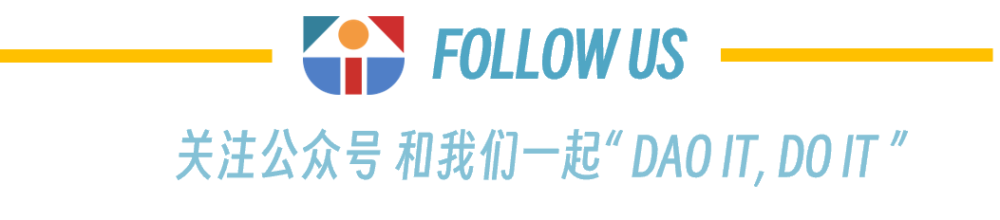

工作职责
1> 虽然 title 是研究员，我们不需要你埋头写研报。
2> 及时更新各个公链基金会的黑客松信息，为 SeeDAO 生态各团队参加黑客松提供详细资料。同时，在黑客松结束后，收集表现优秀的团队和项目信息。
3> 挖掘行业内有孵化可能性的早期团队。
4> 帮助拓展 SeeDAO 战略孵化器的资方网络、公链基金会网络。
5> 协助 SeeDAO 战略孵化器内部其他团队举办 workshop、黑客松等活动。
6> 代表 SeeDAO 战略孵化器参加 Twitter Space。
能力（经验）要求
1> 有在公链基金会组织活动的经验，或者有多次参与公链基金会黑客松的经验，或者有 VC 工作经验；
2> 平时在新加坡或者香港；
3> 掌握研究分析方法，熟悉流程；
4> 优秀的沟通能力、信息收集能力；
工作形式和薪资
兼职，但是能确保足够的时间投入；
每月 1000 U + 5 万 $SEED
简历投递
联系人：shawn
联系方式：shawn.wu2@gmail.com
